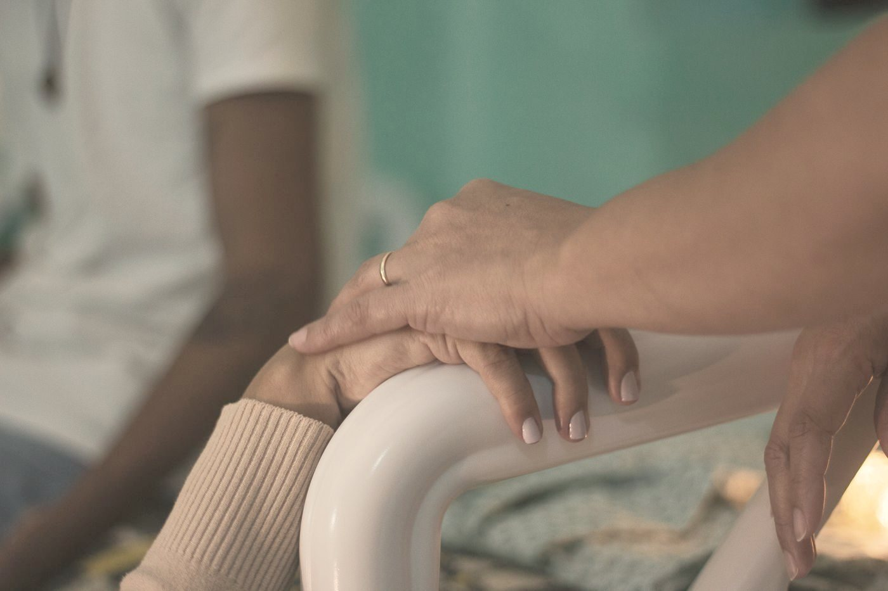
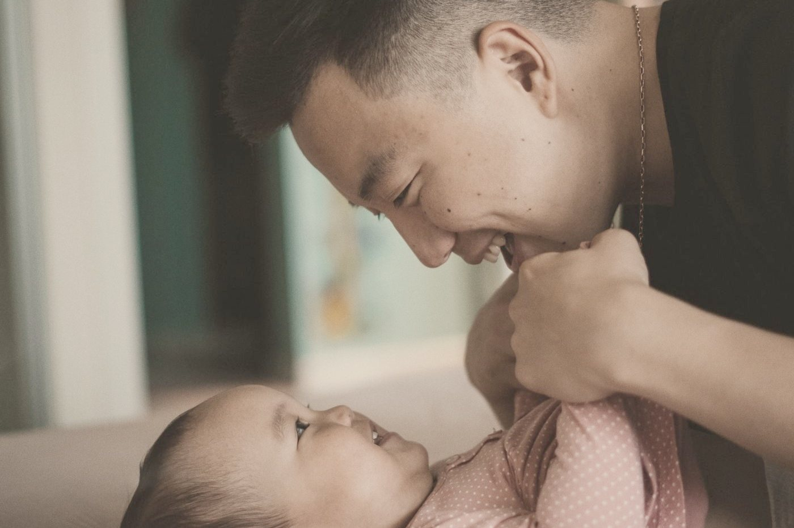

寫給你：她的先生、伴侶，或是那天會站在她身邊的人。
你可能上過一兩堂媽媽教室，坐在後排，聽到一半開始滑手機。你可能心裡想著「到時候醫生護理師會處理」。也可能你其實很怕，但沒有人問過你。
你不用變成專家。讀完這篇，希望你在那一天知道自己可以做什麼。
你的害怕，很正常
2021 年一篇整理了 13 項研究的整合性回顧（Moran 等）發現，準爸爸對生產最大的恐懼，依序是寶寶的安危、太太的安危，還有自己的反應——怕自己不知道怎麼辦、怕自己撐不住。這些害怕常常被他們自己吞下去：研究裡，恐懼程度最高的男性中，有 65% 說從來沒有人問過他們對生產的感受。
同一篇研究也指出，最能讓爸爸安心的，是兩件事：有人清楚告訴他現在發生什麼，以及有一個具體、明確的角色，讓他覺得自己幫得上忙。
Cochrane 2019 年的質性綜述也看到類似的畫面：陪產的伴侶有時會因為看著太太痛而焦慮，覺得自己沒有被納入照護團隊。在台灣，產前教育多半叫「媽媽教室」，專門寫給爸爸的課程很少，這種「站在旁邊、插不上手」的感覺更常見。
一張地圖：每一段會發生什麼、她可能需要什麼、你可以做什麼。不用背，產前讀過一次，到了當天，你會比較清楚現在發生什麼事。

先問她：她要你成為哪一種隊友？
每個人需要的陪伴不一樣。有的媽媽希望你全程在旁邊按摩、說話；有的只想要你安靜地握著手，其他什麼都別做；有的希望你負責跟醫護溝通，讓她專心生。
這件事不要等到產房才知道。生產前找一個晚上，一起聊聊：
- 痛的時候，妳希望我碰妳，還是先不要？
- 哪些話會讓妳安心？哪些話妳不想聽？
- 妳對止痛藥、無痛分娩的想法是什麼？
- 如果醫師建議某個處置，妳希望我怎麼幫妳問？
- 生完之後，妳希望誰來探望、什麼時候？
- 妳最擔心的一件事是什麼？
她的答案可能會在產程中改變——這很正常。所以比起記住答案，更重要的是養成「先問她」的習慣。
產程地圖：每個階段，你可以做的事
以下是大致的樣貌，每個人的產程都不一樣，實際狀況請以醫師、助產師的判斷為準。
- 早期產程宮縮開始規律，但她還能說話、走動
這段常常很長。幫她休息、吃點東西、喝水；記錄宮縮的間隔和長度；照醫院給的指示決定什麼時候出發。你的穩定，就是她的穩定。
- 活躍期宮縮變強、變密，她開始沒辦法說話
這時候少說話、多陪伴。幫她換姿勢、按壓腰背、熱敷；每次宮縮結束，提醒她喝一口水、放鬆肩膀。找到讓她舒服的節奏，就陪她一直重複下去。
- 轉換期最激烈的一段，她可能說「我不行了」
很多時候，這句話代表快了。不需要跟她講道理，告訴她「妳正在做」「我在這裡」。如果妳們事先約好想用無痛，這也可能是她改變心意的時候——尊重她。
- 用力與出生寶寶下來了
跟著醫護的指引，在她耳邊說她的名字、告訴她你看見的進展。寶寶出生後，如果可以，協助肌膚接觸——那一刻，好好看著她們。
- 生產後的頭幾個小時胎盤娩出、母嬰休息
幫她喝水、吃東西，幫忙第一次哺乳時的姿勢。替她擋掉太早湧進來的訊息和訪客，讓她先好好休息。
3R：保護她的節奏
美國陪產員先驅 Penny Simkin 觀察了大量產婦後，整理出一個很好記的原則，叫 3R：放鬆（Relaxation）、節奏（Rhythm）、儀式（Ritual）。能好好度過產程的人，通常在宮縮之間能放鬆、在宮縮時找到某種節奏（搖擺、呼吸、發聲），並且會一次又一次重複某個讓自己安心的動作——那就是她的儀式。
這對你來說很重要：她找到的節奏，你不用糾正，只要保護它。如果她每次宮縮都要你用同樣的力道按同一個地方、說同一句話，那就陪她做到最後。最怕的是旁人為了「幫忙」，打斷了她好不容易找到的節奏。
在台灣醫院裡，你可以怎麼開口
台灣的剖腹產率約 36–38%，很多處置是醫院的標準流程。她在產程中很難好好說話，這時候你可以幫她把事先想好的心願說出口，語氣平和，醫護和你們是同一邊的。
醫護建議某個處置時，可以平和地問：
- 這樣做的好處是什麼？
- 可能的風險是什麼？
- 有沒有其他選擇？
- 如果先等一下，會怎麼樣？
然後，回頭問她。決定權在她身上，你的工作是確定她聽懂了、有時間想。如果真的是緊急狀況，醫護會告訴你們，這時候信任團隊，陪在她身邊。
另外，台灣各醫院對陪產人數、進出產房的規定不一樣，產前就先問清楚，免得當天手忙腳亂。
別忘了，也照顧好你自己
產程可能長達十幾個小時。你餓了、累了、慌了，就很難穩穩地陪她。
- 包包裡放你自己的零食和水
- 手機充電器、延長線
- 趁她休息時，你也閉眼十分鐘
- 需要離開一下時，先告訴她
- 如果有陪產員，可以輪流
- 害怕的時候，說出來沒關係
你的情緒也有位置。生產結束後，如果那天的畫面一直在腦中重播、讓你睡不好，請找人聊聊。

陪過的那些先生
我陪過很多場生產。常讓我記住的一幕，是先生放下手機、蹲到太太旁邊，有點笨拙地幫她擦汗，一直說「妳好棒」。
他們事前大多也很慌。產前花過一個晚上跟太太聊、讀過一點資料的先生，到了產房比較知道手該放哪裡。
想再多準備一點？推薦《生產隊友》
Penny Simkin、Katie Rohs 著，謝汝萱譯，紅桌文化（2020）。原書 The Birth Partner 是許多陪產員訓練課程的指定用書，從產前最後幾週、產程各階段、醫療處置到產後頭幾天，都寫給「陪產的人」看。這篇文章裡的 3R，就是她整理的原則。
如果妳們想一起準備，可以看看陪伴方案裡的產前教育課，或先讀〈為什麼要請陪產員？〉。
常見問題
我很怕看到血、怕自己會昏倒，還適合陪產嗎？
適合。很多爸爸都有這個擔心。你可以站在太太的頭側、看著她的臉，不需要看下方；不舒服時先坐下、告訴護理師。產前跟太太說好你的擔心，她通常會比你想像的更能理解。
我沒上過產前課，到時候還能幫上忙嗎？
可以。最重要的三件事不需要上課：先問她需要什麼、保護她找到的節奏、在她說不出話時幫她問清楚。如果時間還夠，夫妻一起上一兩堂產前課，會讓你在當天安心很多。
已經有陪產員了，我還要做什麼？
你們是同一個團隊。陪產員會告訴你現在發生什麼、你可以怎麼幫，也能讓你喘口氣、吃點東西。她最需要的，往往是你在旁邊——陪產員是讓你們兩個都被接住。
資料來源
- Moran E, Bradshaw C, Tuohy T, Noonan M（2021）《The Paternal Experience of Fear of Childbirth: An Integrative Review》Int J Environ Res Public Health 18(3):1231（PMC 全文）
- Bohren MA 等（2019）《Perceptions and experiences of labour companionship》Cochrane, CD012449（繁體中文摘要）
- Simkin P《The 3 Rs in Childbirth Preparation: Relaxation, Rhythm and Ritual》（Penny Simkin 官網）
- Simkin P, Rohs K《生產隊友》謝汝萱譯，紅桌文化，2020（讀墨書目與目錄）
- 台北榮總婦產部衛教〈準爸爸陪產，讓您輕鬆渡過生產過程〉（連結）
- 台灣剖腹產率：衛生福利部統計處（連結）
頁首照片：Arteida MjESHTRI／Unsplash
本文為資訊整理，不構成醫療建議。產程中的實際處置，請以醫師、助產師的判斷為準。